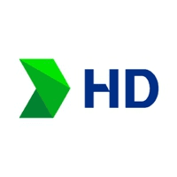

HD한국조선해양 HD Korea Shipbuilding & Offshore Engineering
HD한국조선해양(HD Korea Shipbuilding & Offshore Engineering)은 대한민국 HD현대그룹의 중간 지주회사이다. 조선, 해양플랜트, 엔진 사업의 재편을 거쳐 형성된 회사이다.
최종 업데이트

HD한국조선해양은 어떤 브랜드인가
HD한국조선해양은 HD현대를 모기업으로 두고 조선·해양 관련 사업을 아우르는 중간 지주 기능을 수행한다. 2019년 조선, 해양플랜트, 엔진 사업부문을 신설 현대중공업으로 분할한 뒤 존속회사가 한국조선해양으로 상호를 변경했다.
2023년에는 현재의 상호로 바꾸고 본점 소재지를 HD현대 글로벌R&D센터로 변경했다. 2024년 자회사 HD하이드로젠을 설립하고 핀란드 헬싱키의 연료전지 시스템 기업 컨비온을 인수하며 수소연료전지 시장에 진출했다.
선박 설계·생산 통합 플랫폼 구축과 LNG운반선 건조 계약도 추진한다.
HD한국조선해양은 어떻게 시작되고 성장했나
HD현대가 설립한 회사이며 현재 체제의 설립 시점은 2019년이다. 법인의 뿌리는 1973년 설립된 현대조선중공업주식회사이며, 1978년 현대중공업주식회사로 상호를 변경했다.
2019년 6월 조선, 해양플랜트, 엔진 사업부문을 신설 현대중공업주식회사로 분할하고 존속회사는 한국조선해양주식회사로 전환했다. 같은 달 본사를 울산광역시에서 서울특별시 종로구로 이전했으며, 2022년 12월 사옥을 HD현대 글로벌R&D센터로 옮긴 뒤 2023년 상호와 본점 소재지를 변경했다.
HD한국조선해양의 브랜드 아이덴티티는 무엇인가
조선·해양 사업의 중간 지주 역할과 함께 수소연료전지 및 선박 설계·생산 통합 플랫폼으로 사업 범위를 확장하는 기업이다.
HD한국조선해양의 대표 제품과 서비스는 무엇인가
사업 포트폴리오는 조선, 해양플랜트, 엔진과 수소연료전지 분야로 구성한다. 2024년 설립한 HD하이드로젠은 같은 달 핀란드 헬싱키의 연료전지 시스템 기업 컨비온을 인수하며 수소연료전지 사업에 진출했다.
2025년에는 지멘스 디지털 인더스트리 소프트웨어를 선박 설계·생산 일관화 통합 플랫폼 구축 사업의 우선협상대상자로 선정했다. 2026년 1월에는 미주 지역 선사와 초대형 LNG운반선 4척의 건조 계약을 체결했다.
HD한국조선해양은 지금 어떤 상태인가
HD한국조선해양은 HD현대를 모기업으로 하는 중간 지주회사이다. 본점은 경기도 성남시 분당수서로 477의 HD현대 글로벌R&D센터에 소재한다.
2024년 수소연료전지 자회사를 설립하고 관련 기업을 인수했으며, 2025년 선박 설계·생산 통합 플랫폼 구축을 추진했다. 2026년 1월에는 계약금액 1조4993억원의 초대형 LNG운반선 4척 건조 계약을 체결했다.
HD한국조선해양 로고는 어떻게 변해왔나
자주 묻는 질문
HD한국조선해양는 어느 나라 브랜드인가요?
HD한국조선해양는 한국의 에너지·산업재 브랜드입니다.
HD한국조선해양는 언제 설립되었나요?
HD한국조선해양는 2019년 설립되었습니다.
HD한국조선해양의 브랜드 아이덴티티는 무엇인가요?
조선·해양 사업의 중간 지주 역할과 함께 수소연료전지 및 선박 설계·생산 통합 플랫폼으로 사업 범위를 확장하는 기업이다.
HD한국조선해양의 대표 제품은 무엇인가요?
사업 포트폴리오는 조선, 해양플랜트, 엔진과 수소연료전지 분야로 구성한다.
HD한국조선해양는 어느 기업이 소유하고 있나요?
HD한국조선해양은 HD현대를 모기업으로 하는 중간 지주회사이다.
HD한국조선해양의 창업자는 누구인가요?
HD한국조선해양의 창업자는 HD현대입니다(위키데이터 기준).
HD한국조선해양의 본사는 어디에 있나요?
HD한국조선해양의 본사는 중구에 있습니다(위키데이터 기준).
출처와 검증
HD한국조선해양 관련 참고: 공식 웹사이트 · 위키데이터 Q65312870 · 한국어 위키백과. 브랜드명은 한글과 원어를 함께 표기하되 데이터에 없는 표기는 만들지 않습니다. 기원 국가·설립연도는 검수된 정의문에서 확인된 값을 우선하고, 없을 때만 공식 웹사이트 URL이 일치하는 위키데이터 개체의 값을 씁니다. 위키데이터 값은 2026-09-20 기준입니다.